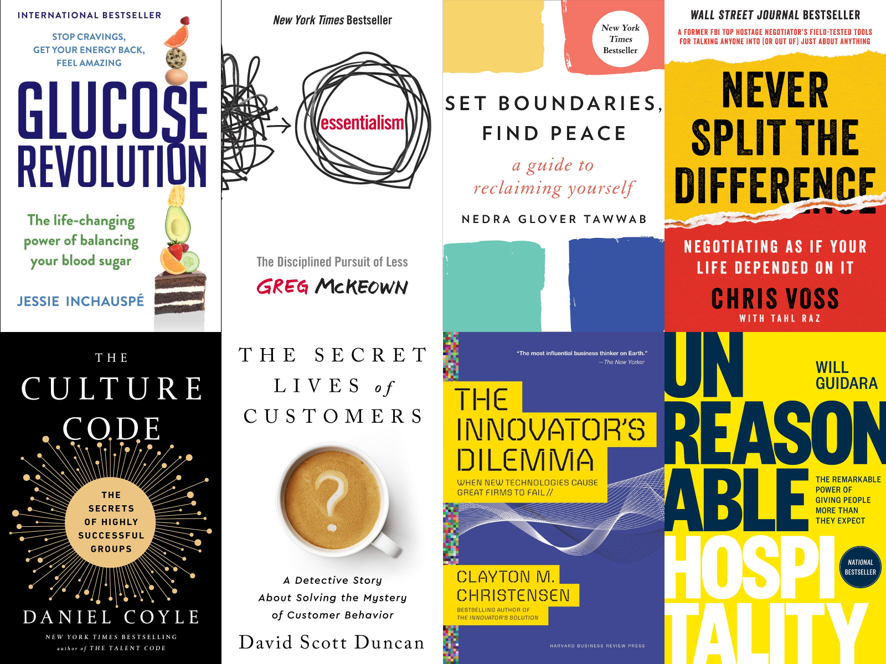

Listening to audiobooks has always been my favorite pastime.
When I was 7, my father began encouraging me
to listen to audiobooks as a hobby. Growing up, my favorite book genres have
transitioned from detective novels before college, to economic history during college,
and to business biography after college.
My ability to digest audiobooks while multitasking (e.g. cooking and washing dishes)
has become my greatest superpower.
In recent conversations, my friends and colleagues often
asked me to recommend books. Therefore, I have compiled a list
of my favorite books organized by topics, curated from 400+ books
that I finished over the years. These books have made profound impact on my
lifestyle, worldview, and business philosophy. Hope you find them useful as well. Enjoy!
For more book recommendations, feel free to check out my
Goodreads bookshelf.
(The books that I rated as 4 and 5 stars are always worth a read).